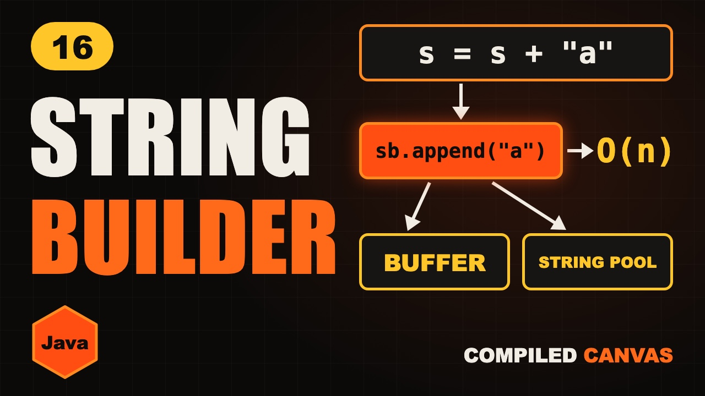

String vs StringBuilder vs StringBuffer in Java

The video goes live on 15 Nov 2026 at 6:00 PM IST. The notes are ready now.
?What this episode covers
One line that adds a letter in a loop can make Java code crawl. Adding one letter a lakh times copies about five billion characters, because a Java string is immutable. It can never change, so every plus makes a new string and copies all the old letters.
StringBuilder fixes this. It's a box of letters with spare room at the end, so adding is O(1) on average and the whole loop is O(n). StringBuffer has the same tools but its methods are synchronized, so it's safe for threads and slower. For DSA you nearly always want StringBuilder.
We also cover the string pool, why == compares objects while .equals() compares text, and the tools you'll use all the time: length(), charAt, substring, toCharArray and counting letters with an array of 26. Then we solve LeetCode 151, reverse the words in a string.
◎What you'll be able to do
- Strings can't change
- The string pool
- Why + is slow
- Builder vs Buffer
- DSA string tools
!The mistake to watch for
Comparing strings with ==. It compares objects, not text. Use .equals().
✦Key moments tap one to jump there
↗Full transcript
Read the whole lesson
Look at this code. It adds one letter, one lakh times. It looks like it does one lakh steps.
It actually copies about five billion characters. Your code crawls, and that plus sign is the reason.
Change one thing, use string builder, and it's about one lakh steps again.
In this video, you'll see exactly why. And you'll never pick the wrong one again.
Welcome back to Compiled Canvas. This is Episode Sixteen of our DSA series. Last time, we finished arrays with the top twenty questions. Today, we start strings.
Here's the plan. First, why a Java string can't change. Then the string pool. Then why that plus sign is so slow. Then string builder and string buffer. And the string tools you need for DSA. A cheat sheet. And an easy quiz at the end.
Let's go.
In Java, a string is immutable. That means once it's made, it can never change.
Look, we call to upper case, but when we print, it's still cat. That call made a new string, and we threw it away.
To keep it, point s at the new string. The old cat is still in memory, until Java cleans it up.
Why make strings immutable? Because Java can share them. Text in quotes lives in a place called the string pool.
A and b point to the same object in the pool. So a equals equals b is true.
New string makes a separate object, even with the same text. So a equals equals c is false.
Here's the rule. Double equals compares where objects live. Dot equals compares the text. For strings, always use dot equals.
Now, that slow plus sign. A string can't change, so s plus a can't add to s.
Java makes a whole new string, and copies every old letter into it, and then adds one.
The first time, it copies one letter. Next, two. Then three, and so on.
Add those up, and for n letters it's about n squared over two. For one lakh letters, that's five billion copies.
String builder fixes this. It's a box of letters that you can change.
It keeps spare room at the end. Adding a letter just drops it into the next empty slot. No copying.
When the box is full, it makes a bigger box, about double the size, and copies once. That happens rarely, so adding stays O of one on average.
So the whole loop is O of n.
Here's how you use it. Make a builder.
Call append in the loop.
And call to string at the end, once.
It also has insert, delete char at, and reverse. These change the same object.
Quick pause, before we go further. If you're finding this video valuable, hit subscribe to Compiled Canvas, and turn on the bell. It's free, it takes one second, and it helps me keep making this complete DSA series for you. Alright, back to it.
So what's string buffer? It's the same as string builder, with one difference. Its methods are synchronized.
That means only one thread can use it at a time. It's safe when threads share it, but that lock costs time.
Here's the choice. Text that doesn't change, use string.
Building text, use string builder. That's nearly always the right one in DSA.
And many threads writing to the same object, that's when you'd pick string buffer. In real code, that's rare.
Here are the tools you'll use all the time. Length has brackets for strings, and no brackets for arrays. It catches everyone.
Char at gives you one letter. It's O of one.
Substring looks cheap, but it copies. So calling it in a loop adds up.
To edit letters, turn the string into a char array.
And here's a trick you'll use a lot. Count letters with an array of twenty six. Char minus a gives the right slot.
Let's use all of this on a real question. LeetCode one fifty one, reverse the words in a string.
First, cut off spaces at the ends, and split on spaces.
Then walk from the last word to the first, appending to a builder.
Add a space between words, and you're done. It's O of n, because we used a builder and not the plus sign.
Your turn. Pause. What does this print? String s equals hi, then s dot concat with a question mark, then print s.
It prints hi. Strings can't change, and we threw away the new one.
So, here's the whole thing in one cheat sheet. Pause and screenshot this.
A string can never change.
Use dot equals to compare text.
A plus sign in a loop is O of n squared.
String builder appends in O of one on average.
String buffer is the thread safe one.
Length has brackets on strings.
Substring copies.
Count letters with an array of twenty six.
Okay, quiz time. Three easy questions. Pause the video, think, and then hit play.
Question one. What does this print?
Question two. What's the time for this loop?
Question three. Building text in a single thread. Which one do you pick?
Ready?
Question one: False. They're different objects.
Question two: O of n squared. Each plus copies the whole string.
Question three: String builder.
How many did you get right? Tell me in the comments: three out of three, two, or one.
Let's recap. A string can't change, so every change makes a new one. Same text in quotes is shared in the pool. Plus in a loop is slow. Use string builder to build text. String buffer is only for shared threads.
Your homework. Solve LeetCode one fifty one, reverse words in a string. Then try three forty four, reverse string. And then try four one five, add strings, using a builder. Hints and Java answers are on compiled canvas dot com.
Next episode, palindromes, anagrams and frequency counting. The string questions you'll see everywhere.
And don't forget to subscribe to Compiled Canvas, so you don't miss anything new in tech and the job market. Keep coding, stay consistent, and I'll see you in the next one.